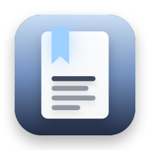
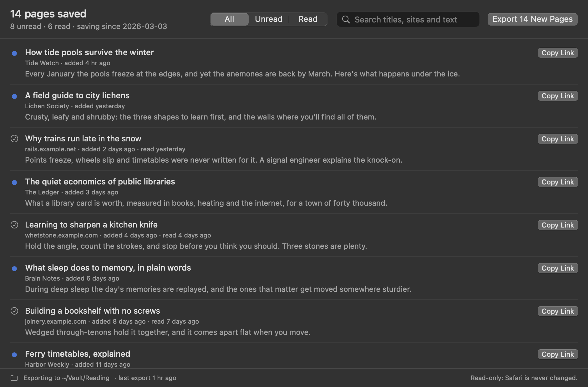

Reading List Export
Every page in your Safari Reading List, read or unread, as Markdown, a bookmarks file and a CSV that read-later apps import. For years of saved links, or a new home after Pocket.
Thanks for downloading! If it helps you move your reading, a star on GitHub helps other people find it.
free · open source · macos 14+ · read-only · no internet access
What you get

- A bookmarks file in the format every browser exports, which Linkding, Karakeep, Raindrop.io and browsers import. Linkding keeps your unread pages unread.
- An Instapaper-style CSV for Wallabag's and Readwise Reader's Instapaper import, with read pages archived.
- A Markdown checklist: unread pages as open tasks, read ones checked off, each with the preview Safari saved. Obsidian-friendly.
- Only what's new: each run adds new pages, keeps pages you've cleared from Safari, and leaves files you've edited alone.
- Extras: JSON, a note for each page, automatic export, a search across every word, and a
reading-list-exportcommand line tool.
What the note looks like
--- title: "Reading List" pages: 14 unread: 8 source: Safari Reading List tags: - reading-list --- # Reading List ## Unread - [ ] [How tide pools survive the winter](<https://tidewatch.example.com/winter-pools>) · added 2026-04-30 > Every January the pools freeze at the edges. ## Read - [x] [Why trains run late in the snow](<https://rails.example.net/snow-delays>) · read 2026-04-29
Questions
How do I get my Reading List out of Safari?
Choose Save as Bookmarks File… from Reading List Export's menu bar icon, then import the file in your read-later or bookmark app. Or choose an export folder to keep Markdown, the bookmarks file and a CSV up to date.
I left Pocket. Where can my Reading List go?
Linkding, Karakeep and Raindrop.io import the bookmarks file, and Linkding keeps unread pages unread. Wallabag and Readwise Reader import the CSV through their Instapaper import. Or keep it all in Obsidian as a checklist.
Does it export Tab Groups?
Not yet. Safari keeps Tab Groups in a separate database from the Reading List, and they're planned for the next version.
Why does it need Full Disk Access?
macOS keeps Safari's data in a protected folder no other app can read without it. Reading List Export's App Sandbox still limits it to one file there, Safari's bookmarks file, read-only, plus the export folder you choose. Your history, tabs and passwords stay out of reach. The details are in SECURITY.md.
Will it change or delete anything?
No. It can only read Safari's bookmarks file. It never deletes anything, and never overwrites a file you've edited. It doesn't fetch pages either: you get the title, address and preview Safari saved, not the whole article.